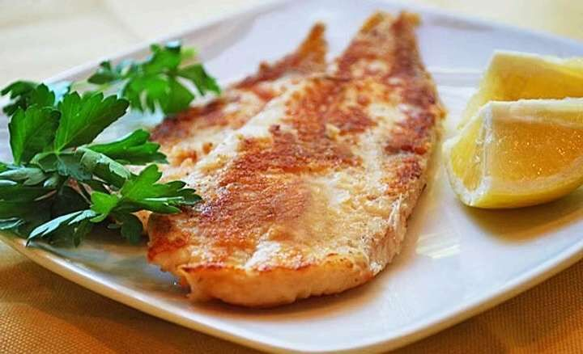

Pan Fried Dover Sole

Ingredients
- 4 (6 oz) skinless Dover sole fillets
- 1/2 teaspoon salt
- 1/4 teaspoon black pepper
- 1/2 cup white whole-wheat flour
- 2 tablespoons unsalted butter
- 1 lemon, cut into wedges, for serving
- Parsley for garnish
Instructions
- Season the sole fillets with salt and pepper, then dust with flour on both sides, shaking the excess off.
- In two large nonstick skillets, melt the butter over medium-high heat. When foaming subsides, add the fish.
- Cook the fish, turning once, until golden-brown, about 3 minutes on each side.
- You might need to lower the heat to medium after turning, depending on how hot your pan gets.
- Transfer the fish to plates. Garnish with parsley and lemon wedges. Serve immediately.